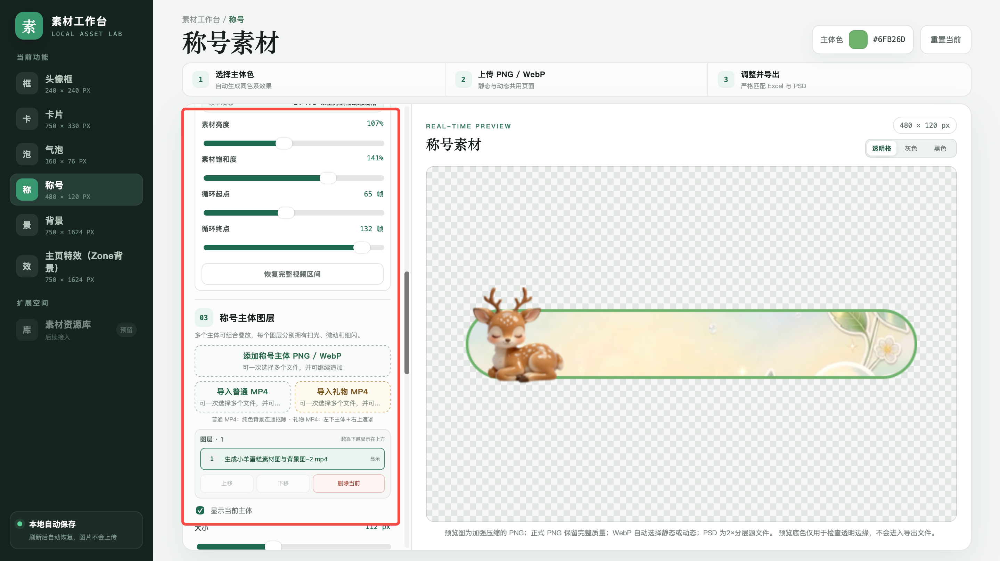

Systems & Tools
软件开发
将数据处理流程和 AI 能力封装为可交互的产品，覆盖在线系统、桌面助手与数据工具。
AI 桌面助手（Wriothesley）
独立完成桌面端、AI功能、云同步与展示站开发。将聊天、任务计划、截图OCR、快速翻译与便签整合为常驻桌面的效率工具。
核心功能：
- 桌面角色：透明显示、置顶停靠、可拖拽，并记住上次关闭位置
- AI交互：管理历史上下文，解析并校验结构化指令，将自然语言转化为任务操作。
- 系统集成：以IPC实现多窗口通信，适配macOS与Windows原生OCR。
- 云端数据：Supabase账号认证与行级访问控制，同步计划、便签、聊天和配置4类数据。
- 本地可靠性：原子写入、串行写入锁和备份恢复，降低计划数据写入损坏风险。
- 计划与周报：聊天可写入计划，任务完成后可整理周报
- 截图 OCR：区域截图、保存、复制、文字识别和翻译
- 便签与短文本：记录常用信息，快速复制临时内容
- 设置与装扮：管理 API、快捷键、主题、透明度和角色外观
AI素材工作台
在Construct实习期间独立设计并开发，针对产品与运营人员设计门槛高、素材制作依赖专业人员的问题，将AI生成图片和视频接入统一的编辑、预览与导出流程。

- 个人职责：需求梳理、交互设计、独立开发、使用说明与团队交接。
- 功能覆盖：头像框、卡片、气泡、称号和背景等素材，支持位置、大小及部分动态效果调整。
- 实际使用：已在部门产品与运营团队落地，按素材类型制作效率提升2—5倍。
城市公共交通智能出行系统（Mobility Agents）
本项目是一个基于大语言模型（LLM）的城市公共交通智能出行推荐系统，融合公交与地铁数据，实现站点查询、地图交互与智能建议生成。系统采用前后端分离和多层架构设计，通过智能体自动分析站点特征。
核心功能：
- 公交 / 地铁站点可视化展示、缩放与点击交互
- 获取站点详细信息及周边设施数据
- 基于 LLM 生成个性化出行建议
- 前端 / 网关 / 智能体 / 数据层解耦设计
- 兼容 PC 端与移动端访问
轨道交通刷卡数据清洗工具
本工具面向轨道交通刷卡数据，支持灵活的数据清洗和筛选规则。自动化流程可处理重复进出站数据、筛选交易类型和删除高频用户，确保数据质量和分析效率。
核心功能：
- 选择任意 CSV 数据文件，并按不同格式自定义列号
- 自动剔除进站和出站相同的记录
- 支持筛选交易类型为奇数或偶数的记录
- 根据可配置阈值删除高频用户
- 输出格式统一的 CSV 文件